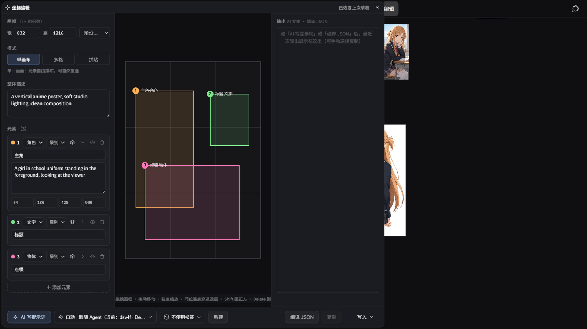
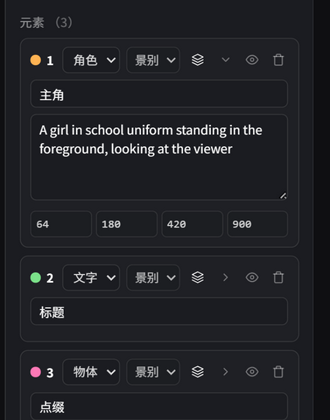

流光（LumenLight）使用教程
流光是一个 AI 绘画工作台：无限画布 + ComfyUI 工作流（本地 / RunningHub 云端） + LLM 对话绘图 + agent 智能体与 MCP 扩展。 本教程从启动到进阶，覆盖画布的全部功能。按左侧目录跳转阅读。
1 · 快速开始
启动
- 绿色版用户：解压后双击
start-server.bat即可—— 项目已内置 Node 运行时（runtime/node.exe）和全部依赖， 无需安装任何环境； - 开发者：首次使用先安装依赖（
npm install），再启动后端 （node server.js，默认端口 8080）； - 浏览器打开
http://localhost:8080，即可进入画布。
连接 ComfyUI
流光的 Comfy 生图能力依赖本地 ComfyUI（默认地址 127.0.0.1:8188，
可用环境变量 COMFY_API_URL 修改）。启动 ComfyUI 后，打开右侧面板，
头部的状态灯变绿即表示连接正常。
2 · 界面总览

- 左上角 ☰ 文件菜单：打开画布 / 新建画布 / 保存画布 / 另存为 / 备份导出 / 备份导入（见第 10 章）/ 设置 / 帮助；
- 顶栏：画布名称、自动保存时间；中段按钮从左到右—— LoRA（LoRA 管理窗口，见第 12 章）、提示词 （提示词收藏窗口，见第 12 章）、Comfy（工作流编辑器）、 坐标编辑（坐标提示词可视化制作，见第 15 章）；
- 无限画布：所有图片与节点的工作区；
- 右侧面板：可在「Comfy 提示词」与「LLM 对话框」两种模式间切换；
- 左侧工具栏：本地上传图片 / 视频到画布；下方文件夹按钮打开 本地资产库——标签绑定本地文件夹，缩略网格展示图片与视频， 资产可拖入画布、双击灯箱预览；选中画布图片后点图片工具栏的 「添加到资产」可收入内置标签「我的资产」（保存在项目 data/assets/ 文件夹，标签可删除、再次保存自动恢复）；列表按钮打开 任务中心（见第 3 章末尾）；
- 左下角视图控制：自适应屏幕按钮 + 当前缩放百分比。

3 · 画布基础操作
| 操作 | 方式 |
|---|---|
| 缩放画布 | 鼠标滚轮（或左下角百分比旁的自适应屏幕） |
| 平移画布 | 按住 空格 拖动，或直接拖动空白处 |
| 上传图片 | 把图片文件拖入画布，或复制截图后 Ctrl+V 直接粘贴；也可用左侧工具栏上传图片 / 视频 |
| 播放视频 | 单击画布上的视频就地播放（ESC 或点击外部关闭） |
| 选择 | 点击对象；空白处拖动框选多个对象 |
| 移动 | 拖动已选中的对象 |
| 复制 / 剪切 | Ctrl+C / Ctrl+X（对选中的图片与节点生效） |
| 粘贴 | Ctrl+V：剪贴板里有外部图片时优先粘贴图片，否则粘贴内部复制的对象 |
| 删除 | Delete 删除选中对象（节点连线会一并清理） |
| 添加节点 | 画布空白处右键，选择节点类型 |
| 重命名节点 | 双击节点标题栏的文字改名（六种节点通用）：回车或点击空白处提交，Esc 取消，留空恢复默认标题 |
| 撤销 / 重做 | Ctrl+Z / Ctrl+Shift+Z（或 Ctrl+Y）——移动 / 缩放 / 删除 / 新增 / 连线 / 编组全可回退（50 步） |
| 上传音频 | 把音频文件（mp3 / wav / ogg / flac 等）拖入画布即落音频卡片，单击卡片弹出播放器（播放中点击外部不打断，Esc 或暂停态收起） |

编组
画布空白处右键选「新建组」（有选中对象时自动包住选中内容）。
组是一个可命名的底色容器：拖动标题栏整组联动、四边手柄缩放只改组边界、
双击标题改名、标题栏右侧下拉换配色；Delete 只删组壳、成员保留
（成员按几何包含实时判定，组不存固定清单）。选中组时出现编组工具栏：
- 布局下拉：宫格 / 瀑布流 / 水平 / 垂直，一键把成员排整齐 （只移动不缩放）；
- 聚集开关：开启后新生成的图统一落入本组 （全局至多一个聚集编组），逐张自动找空位摆放，放不下不缩放不裁切； 适合「跑一批图慢慢挑」的场景；
- 解组：删组壳保留成员。
任务中心
左侧工具栏的列表按钮打开：一轮生成 = 一个任务，带进度与状态 （运行中 / 完成 / 失败 / 已停止）。行尾恒有 ✕——运行中且有停止 通道 = 取消该任务，无通道（agent 后台 / 云端）= 仅移出列表， 已结算 = 清除记录。点击任务行可定位到画布上的对应对象； 角标显示运行数，失败任务红显驻留。Comfy 生图 / API 生图 / RunningHub / API 视频 / 面板运行 / 高清放大 / agent 后台任务都会登记进来。
4 · 提示词节点

提示词节点是画布上的可视化提示词容器。右键菜单创建后直接输入文字； 它有两个端口：左端口接收内容，右端口输出给下游。
串联与合并
多个提示词节点可以串联（A 的右端口连 B 的左端口），生图节点会沿链路把 所有节点文本合并为一条提示词，段间空行、拼接处自动补逗号 （区分中英文，详见第 8 章）。
参考图与 @图片N 引用
把画布图片连到提示词节点的左端口，节点顶部会出现参考图缩略图条，
每张图带序号徽标（①②③…），顺序即发送给生图 API 的参考图顺序。
点击缩略图会在光标处插入 @图片N 引用标记（正文中以青色高亮显示），
告诉模型这张图应该用在哪里。
5 · 技能系统
提示词节点底部有技能栏：左边下拉选择技能，右边圆形按钮执行。 技能会调用聊天模型处理节点文字（和连入的参考图），结果直接替换节点内容。

内置技能
- 优化提示词：扩写与补细节；
- 反推图像：连线一张图，让模型反推出提示词。
自定义技能（data/skills/*.md）
在项目的 data/skills/ 文件夹里放一个 .md 文件，
刷新页面即生效，无需重启。文件名 = 技能 id。
文件由头文件（元数据）和正文（指令）组成：
头部用两行 --- 包裹，正文就是发给模型的指令。
---
id: translate-en
name: 翻译提示词
icon: globe
inputText: true
inputImages: false
---
你是绘画提示词翻译专家。把用户发来的提示词翻译成英文，
只输出翻译结果，不要任何解释。头文件字段说明
| 字段 | 必填 | 说明 |
|---|---|---|
id | ✓ | 唯一标识，仅字母/数字/下划线/连字符，与文件名一致 |
name | ✓ | 技能下拉里显示的名称（最长 50 字） |
icon | 图标键名：zap eye type star globe heart flag，缺省 star | |
inputText | 是否把节点文字发给模型（默认 false） | |
inputImages | 是否把连入节点的参考图发给模型（默认 false，可选输入） | |
requireImages | 是否必须连线参考图（为 true 且没连线时拒绝执行） |
6 · 生图节点
生图节点没有右端口，只接收上游提示词。有四条平行链路：
LLM 生图节点

调用 API 生图模型（在设置里配置厂商与模型，见第 13 章）。 底部生成行为「数量步进器 + 生成按钮 + 停止 ✕」： 数量 1-8 张（上下箭头步进或直接键入），多张时并发请求， 每张独立出图；生成期间 ✕ 点亮为红色，点击即中止本轮全部请求 （后端同步掐断对厂商的请求，不再继续计费），已完成的照常落图， 通知条显示「已停止生成」。
Comfy 生图节点

选择一个 ComfyUI 工作流后，节点会自动扫描工作流 JSON， 把里面可调的参数渲染成表单：主模型、模板内嵌 LoRA（带启用开关）、 步数+CFG、采样器+降噪、尺寸、数量——工作流里有什么就显示什么。 生成时参数由后端注入工作流后提交 ComfyUI。
- 数量 = 独立任务数：数量 N 会向 ComfyUI 队列循环入队 N 个任务 （每个任务独立随机种子），跑完一张立刻回传落一张；
- 某张提交失败会自动中止剩余任务，已完成的不受影响；
- 超过 100 张时会弹窗确认，防止误操作刷爆队列；
- 生成结果按占位图先进先出逐张替换，占位图位置即出图位置。
RunningHub 云端生图节点（工作流 / 应用）
第三条链路走 RunningHub 云端平台（云端 ComfyUI 托管，本地无需装 ComfyUI）：工作流/应用本体保存在平台上，操作全在节点上完成——新建 RunningHub 节点后，选类型（工作流 / 应用），把平台页网址末段的 纯数字 ID 填进节点，点「拉取」，平台开放的参数会自动解析成参数行。
- 应用 API：平台「AI 应用」的接口。应用作者开放的参数带中文说明 与类型（下拉/数值/文本/图片槽），按应用定义直接渲染；「档位」下拉可选实例显存 （default · 24G / plus · 48G / ultra · 84G，影响计费，留空走平台默认）；
- 参数行动态重建：提示词 / 种子 / 帧率 / 尺寸等由云端资源决定有 什么；宽度与高度自动合并为一行「尺寸」；拉取过的资源进「最近」下拉，换节点 或重启后一键恢复，参数模板随画布存档保存（离线也能恢复）；
- 数量 = 并发任务数：生成按钮旁的步进器，N 表示同时向平台 提交 N 个任务（按平台计费，超 100 个先弹确认）；种子留空时每个任务自动随机， 避免 N 份相同结果；
- 结果自动回流画布：平台链接 24 小时失效，出图会立即下载转存本地；
- 缺连线图片时生成前会提示需要几张；单个任务失败不影响其余并发任务。
快照与编辑器覆盖：工作流「拉取」成功后，快照会自动存入顶栏 Comfy 编辑器（列表里 RH- 开头的条目），可以打开直观查看工作流的全部节点。 在编辑器里修改快照的参数并保存，差异会自动作为「编辑器覆盖」 存进快照记录，提交生成时覆盖值就是云端实际执行的值。两条边界：
- 覆盖只对字段值生效（提示词/种子/步数等）；在编辑器里 增删节点、改连线无法上传到云端（平台不支持），保存时会提示；
- 节点参数行里填写的值优先于编辑器覆盖；重新「拉取」会刷新 快照并清除旧覆盖。
API 视频生成节点
第四条链路走 API 视频模型（设置里类型标记为「视频」的模型， 如火山方舟系）：新建「API 视频」节点，选模型、比例、时长（模型支持多少填多少）， 连入首帧参考图（可选），点生成即提交云端任务——节点上实时显示等待秒数， 完成后视频自动落到占位框位置（生成期间平移画布也不会跑偏），点击就地播放。 停止 ✕ 只中止本节点的等待轮询，云端任务无法撤回（与聊天窗口同语义）。
7 · LoRA 节点
LoRA 节点串在提示词链路中（提示词 → LoRA → Comfy 生图），可以不断 「+ 添加 LoRA」堆叠多个条目，每条包含：
- 文件下拉：来自 ComfyUI 的 lora 清单（带封面与 Civitai 友好名， 支持触发词关键词过滤）；选空 = 此条不生效；
- 启用勾选框：取消勾选即提交时剔除该条（条目置灰），不必删除—— 适合 AB 对比不同 LoRA 组合；
- 模型强度 / CLIP 强度：数值输入框。
提交时由后端以「图拼接」方式动态注入，追加在工作流模板内嵌 LoRA 之后（叠加语义）。注意 LoRA 只对 Comfy 生图链路生效，LLM 生图不涉及。
条目区左上角的「触发词」按钮打开触发词管理器（画布模式）： 勾选生效 LoRA 的 Civitai 触发词、逐词开关与调权重，拼成的托管块自动写入 本链路上的提示词节点末尾（写入目标可选链上任一提示词节点，默认最近一个）。 面板 Comfy 模式的 LoRA 叠加区有同款按钮（面板模式），两侧逐词配置互通。
8 · 提示词合并规则
「多个提示词节点」与「面板双正面框」共用同一套合并规则：
- 每段先去除首尾空白，空段剔除；
- 段与段之间用空行分隔；
- 拼接处自动补逗号，并区分中英文：
| 前段结尾 | 拼接处 |
|---|---|
已有 ， 或 , | 不补 |
| 中文字符（如「……咖啡店」） | 补全角 ， |
英文/数字/符号（如 ...quality） | 补半角 , |
例：框 1 = masterpiece, best quality，
框 2 = 1girl, coffee shop，合并发送结果为：
masterpiece, best quality,
1girl, coffee shop9 · 右侧面板
Comfy 模式

- 正面提示词 1 / 2：两个独立输入框，均可折叠（标题栏点击）， 状态自动记忆。框 1 适合放质量/画风类长期提示词，框 2 放人物动作等内容。 运行时两框自动空行 + 补逗号合并（见第 8 章）；
- 图片缩略图槽位：槽位数量跟随所选工作流里的取图节点数
（0-9 个，纯文生图工作流自动隐藏），点击上传、点 × 清除；
对应 ComfyUI Edit 类工作流的取图节点。没有 Lumen 取图节点的裸工作流，
原生 LoadImage 输入也会被识别为直注槽（槽位带
#节点id角标），连线图片按 LoadImage 在工作流中的先后顺序直注； - LoRA 叠加区：所选工作流模板内嵌的 LoRA 会归入这里统一管理 （文件/强度/启用开关，删除只影响本次提交），也可自行添加条目追加注入； 标题栏右侧的「触发词」按钮打开触发词管理器（见第 7 章）；
- 负面提示词标题条右侧的「提示词」按钮：Comfy 提示词预设库
（正面 / 负面两库分页管理，增删改 + 一键覆盖注入到对应输入框，
弹窗不关可连注），预设存
data/comfy-prompts.json； - 负面提示词：默认折叠；
- 工作流：下拉选择，选后下方出现动态参数区；
- 数量步进器：运行按钮左侧，上下箭头步进或直接键入（1-9999）， 超过 100 会弹窗确认。
LLM 对话模式

- 模型下拉（四分类双栏）：打开后左栏按用途分四类—— Agent（对话模型）/ 图片生成 / 视频生成 / 其他（网页桥接入口），点左栏只切换右侧列表，点右侧条目才真正选中 （全局单选，条目副标签显示厂商名）。模型在设置的 API 页配置， 类型归类跟随设置里的类型标记（未标记的按名称自动识别）；
- Agent 分类即对话入口：选中某个对话模型 = 以该模型进入 agent 模式（详见下节）——本面板没有独立的纯聊天直连，agent 本身 就具备完整对话能力；
- 支持图片附件多模态输入；对话生成的图片可拖回画布继续加工；
- 点击图片可打开灯箱全屏预览；
- 消息刻度导航：消息区左缘的悬浮细条，每条用户消息一个刻度 （≥ 2 条才显示）——悬停预览该轮提问、点击跳转，滚动时当前轮次的刻度自动加亮；
- 自动跟随：流式输出时始终贴底显示最新内容；上滑阅读历史即暂停跟随， 点击右下角浮现的回底按钮恢复；
- 视频生成：选择视频模型后发送描述即文生视频 / 图生视频 （附图片附件即图生），进度实时更新，成品在窗口内直接播放，也可拖到画布；
- 选择生图模型时会出现比例/分辨率选择面板；
- 停止生图：生图任务可并发连发（生成期间可继续发下一张， 互不等待）；发送按钮左侧的 ✕ 按钮在有生图任务时点亮为红色， 点击即中止面板全部在飞生图（后端同步掐断对厂商的请求，不再继续计费）， 对应气泡显示「已停止生成」。
agent 模式（编码智能体）
模型下拉 Agent 分类里选中一个对话模型即进入智能体模式 （该模型就是 agent 的底层模型）：agent 是一个能操作画布的编码智能体， 通过读写画布、跑 ComfyUI 工作流、生图生视频、资产检索、调用 MCP 工具 （见第 14 章）等方式自动完成任务（如「跑某工作流生成三张分镜」）。
- 底层模型与权限：底层模型在面板下拉 Agent 分类里直接选 （与 设置 → 通用 →「agent 使用的模型」是同一处选择，两处互相同步）； 权限分级（只读 / 标准 / 完整）在设置 → 通用， 同时决定可用的 MCP 工具范围（见第 14 章）；
- 后台生图 / 视频任务：agent 提交 API 生图或视频生成后 立即返回任务号并继续对话，生成在后台进行 （生图约 1-5 分钟、视频约 5-15 分钟），期间它会定期查询进度； 完成后图片/视频自动落到画布，无需手动取； 点 ■ 停止会连同后台任务一起取消；
- 分阶段输出：回复按「思考 / 工具调用 / 最终回答」分块渲染， 工具块可折叠（默认展开），右侧标已完成 / 失败；
- 执行中指示器：任务运行期间最新消息框下方有转圈图标 + 「执行中…」；长沉默（长工具、长模型调用）也代表还在工作，请耐心等待；
- 失败与卡死：回合失败会附说明与 ↻ 重新继续 按钮 （点击重发上一条消息接续执行）；agent 疑似卡死时弹 [重启 pi 进程] / [继续等待] 双按钮由你决策——程序不会自动重启 pi；
- pi 状态灯：面板头部的四态指示——灰=未运行 / 绿=正常 / 黄=疑似卡死 / 红=已退出；黄红时点击状态灯可直接重启 pi （pi 随后端启动自动拉起，一般无需手动干预）；
- 指定技能：模型旁的下拉——选定一个技能后，每轮 agent 消息 都会注入一行「先加载并遵循该技能」的注记（不注入技能正文，上下文不膨胀）； 「自动」档回到模型自主判断，选择记忆在本地；
- 工具与技能：面板头部按钮打开管理弹窗——「技能」tab 查阅 pi 技能库（含内置与用户自定义，勾选启停、上传单文件或文件夹）， 「工具」tab 可对扩展注册的全部工具（画布 / Comfy / 联网 / 技能等） 逐个勾选启停，禁用下一轮消息即生效（连同 schema 从模型可见清单移除）；
- 会话与统计：每个画布存档绑定一个独立会话（重启后端历史仍在）； 对话顶部灰字显示实际调用模型与本次上下文统计（ctx = 总 token，CH = 缓存命中率）；
- 聊天记录保留：LLM 窗口的聊天记录（含图片与 agent 回复） 全局统一一份（不随画布存档分家，切换存档记录仍在），F5 刷新后自动恢复； 网页桥接模式按站点各自一份；
- 清空：垃圾桶按钮清屏的同时清除持久化聊天记录， 并重置当前存档的 agent 会话（下条消息从头开始）。
网页桥接模式
模型下拉「其他」分类里的「网页桥接」入口：后端用内置浏览器驱动 拉起一个专用浏览器窗口（独立配置目录，与日常浏览器互不干扰）， 把消息驱动进目标站点网页（豆包 / ChatGPT / Gemini），网页里跑出来的 回复与图片、视频自动回流面板与画布——生成全程不经任何 API、不耗 Key。
- 首次使用：设置 → 网页桥接 → 启动桥接，在弹出的浏览器里登录站点一次即可 （登录态持久保留）；
- 聊天记录按桥接站点各自一份（与 API/agent 模式互不串），刷新后恢复；
- 站点适配器独立维护（一站一文件），站点改版只需更新对应适配器。
10 · 文件与存档
- 保存画布 / 另存为：把当前画布（图片 + 节点 + 连线 + 提示词 + 视口）
存到
save/存档名/目录； - 打开画布：从存档列表恢复；
- 新建画布：清空当前画布与面板提示词（有确认框）；
- 自动保存：画布内容变化时自动快照到浏览器（IndexedDB）， 意外刷新后自动恢复；
- 实时保存：同时把画布实时写入本地磁盘
data/autosave/，顶栏显示最近保存时间； 启动时若检测到磁盘上有未收尾的会话，会弹窗询问是否恢复。
备份导出 / 备份导入
文件菜单里的两项，把用户数据打包成一个 zip 文件带走（换机 / 归档 / 分享给 另一台机器的流光）：
- 导出：勾选要打包的内容——画布存档（save/ 全部存档含图片）、 API 设置（子项「包含 API Key」默认勾选，导出文件含明文密钥请勿外传， 不勾则三处密钥脱敏置空）、聊天记录、提示词库 （收藏图片 + 系统提示词 + Comfy 预设）；
- 导入：选择备份包后勾选要导入的项。合并策略永不静默覆盖： 存档同名自动改名「原名-导入时间戳」；API 设置按厂商合并（同名厂商以备份包为准， 其余保留）；收藏与预设按条目并集（现有优先）；聊天记录是整包替换—— 勾选时弹窗有红色警示，不勾就不动；
- 导入完成后逐项汇报结果；API 设置与聊天记录的变化刷新页面生效。
11 · 图像工具
点击画布上的图片会出现浮动工具栏：
- 编辑：打开 ImageStudio 图像编辑器（PS 式全屏 编辑器，详见下）；
- 生成同款：仅带生成记录的图显示——弹出参数卡（提示词可改、 模型/比例/步数等行内可调），点圆形执行键按当前参数重跑一张， 也可「仅回填」把参数写回面板再手动调（见下方「图片溯源」）；
- 添加到资产：存入本地资产库内置标签「我的资产」（见第 2 章）；
- 保存提示词：把提示词与图一起存进收藏页（见第 12 章）；
- 高清放大：调用本地 Real-ESRGAN（Vulkan GPU 加速）， 放大结果落在画布上；
- AI 抠图：本地 RMBG-2.0 模型推理（onnxruntime）， 去除背景；模型文件可在设置里下载管理。
ImageStudio 图像编辑器
PS 式统一编辑器：左侧工具栏（移动 / 画笔 / 橡皮 / 模糊笔刷 / 文字 / 形状 / 调色 / 遮罩开关 / 移除 / 还原 / 裁剪），右侧色板（PS 式取色器 + 最近使用色） 与图层面板，顶栏「文件」菜单（置入本地或画布图片为新图层）与 「左右翻转」（非破坏式，图层与缩略图同步镜像）。
- 图层：底片即图层 0，可拖动缩放删除；置入的图片、文字、 形状各占一层，可拖放排序、逐层透明度、右键新建/复制/删除； 文字层与形状层保存后仍可再编辑（属性驱动渲染）；
- 文字工具：点击画布就地输入，顶栏选字体/字号/横竖排 （竖排逐字自绘，CJK 直立西文转向）；
- 形状工具：矩形 / 圆角矩形 / 椭圆 / 气泡框，填充与描边 可独立关闭（红斜杠去除色块）；
- 模糊笔刷：平铺语义（一笔之内每像素只糊一次，回描不叠加）， 顶栏「强度」调模糊量；
- 调色工具：浮动弹窗对选中图层调光线（亮度/对比度/饱和度/色温） 与质感（锐化/颗粒），拖动实时预览，保存烘焙进图层（可撤销）；
- 遮罩开关 + 移除工具：开启遮罩后涂画即标记录区域 （局部重绘，随 Comfy 提交自动烘焙传递）；移除工具自带涂抹，松手自动 AI 抹除——本地 LaMa 模型推理物体移除，推理期有忙碌遮罩；
- 抠图：对选中图层 AI 去背景（RMBG），就地写回保持透明；
- 裁剪 / 扩图：拖拽画幅四边锚点调整最终尺寸（可向外扩展、 也可向内裁剪），带三分网格与实时尺寸标签，保存按画幅导出新图；
- 历史记录：右栏按钮唤出 PS 式历史面板（操作点快照，
点击条目回退/前进），
Ctrl+Z/Ctrl+Shift+Z步进。
图片溯源与生成同款
五条画布落图链路（四类生成节点 + 面板运行）提交时都会构建一份生成参数 快照，随图落画布并随存档持久化。之后随时可以：选中图片点「生成同款」 查看参数并一键重跑；聊天里生成的图拖进画布也带记录。Comfy 链路记录工作流名/ 步数/CFG/采样器/主模型/LoRA，API 链路记录模型/比例/质量，RunningHub 记录参数清单。

12 · 提示词收藏与 LoRA 管理
顶栏有两个管理窗口：「提示词」打开提示词收藏页， 「LoRA」打开 LoRA 管理窗口。两个窗口骨架相同——左侧清单栏 + 右侧封面网格 + 右上搜索栏——搜索栏左侧都有一个漏斗形筛选排序下拉， 选中的排序方案会自动记忆（下次打开沿用）。
提示词收藏
保存入口在画布图片工具栏的「保存提示词」按钮（先命名、选模型标签）。 收藏页功能：
- 左侧模型标签栏：点击标签筛选右侧卡片（再点「全部」取消）， 支持行内新建、删除标签；标签支持三级层级——父标签行内可建子标签 （选父标签时子孙标签的收藏一并纳入），删除父标签时子标签上移一级不级联； 树的折叠状态自动记忆；
- 瀑布流卡片：点击图片打开详情弹窗（大图 + 编辑名字/模型/提示词）， 双击名字就地重命名，Copy 一键复制正向提示词， 详情弹窗里还可把提示词直接写入面板正向框 1/2 或画布提示词节点；
- 批量管理与右键菜单：工具行「批量」进入点选模式（卡片绿✓角标）， 批量条支持全选 / 取消 / 完成后统一删除或移动到标签；单卡右键菜单： 移动 / 打开所在文件夹 / 删除（删除带确认）；
- 搜索框：按名字模糊检索，与左侧标签筛选叠加生效；
- 排序下拉（搜索框左侧）：收藏先后（默认）/ 添加时间 新→旧 / 名称 A→Z；
- 提示词 sidecar：每张收藏图旁自动写一个同名
.txt（标题/模型/时间头 + 正负提示词 + 生成参数），方便用外部工具检索—— 纯单向导出，应用只写不读。
LoRA 管理
全局 LoRA 台账，扫描 ComfyUI 的 models/loras/ 目录（只读，
不做改名/删除文件以外的操作——工作流里 LoRA 路径是写死的，改名会断链）：
- 左侧文件夹栏：按 loras 目录的子文件夹成树筛选（可折叠， 点击含子文件夹内容），带数量统计；每次开窗都重扫磁盘（外部增删的文件 自动同步，diff 会轻提示「新增 X · 移除 Y」）；
- 封面网格：3:4 封面卡。封面优先读 LoRA 同名的
.preview.png/.jpg预览图（与 Civitai / A1111 惯例一致， 自己往目录放同名图即可显示），无图显示渐变占位块； 点击封面打开信息窗——可上传画布图片或本地图片做封面、编辑 触发词、查看模型说明（Civitai 数据）、删除该 LoRA （源文件+封面+元数据，有确认框）、打开所在文件夹； - 星标置顶：封面右上角星星点击置顶，置顶项排最前且星星变金色；
- 纸飞机投递：把该 LoRA 投递到画布 LoRA 节点或右侧面板 Comfy 模式的 LoRA 叠加区（追加语义），投递目标带标题时自动带上编号； 投递名称自动按目标 ComfyUI 的清单归一（子文件夹/分隔符差异不再报 「不在清单」）；
- Civitai 一键获取：工具行「获取」按钮——批量给本地 LoRA 拉取 Civitai 数据（模型名/底模/作者/说明/触发词/封面），按文件 SHA256 精确匹配，支持冲突策略选择、进度轮询与取消（API Key 与代理在弹窗里可选填， 代理留空自动检测系统代理）；
- 批量管理：与收藏页同款批量模式（绿✓点选、批量置顶、 批量删除、批量移动到子文件夹），单卡右键菜单同款五动作；
- 排序下拉（搜索框左侧）：置顶优先（默认）/ 添加时间 新→旧 / 添加时间 旧→新 / 仅看置顶——置顶的永远排最前， 时间档只在同组内部生效。「添加时间」取文件修改时间（LoRA 下载后很少重写， 基本等同下载时间）。
13 · 设置详解
通用
- 显示图片缩放锚点：关闭后四角锚点不绘制，但缩放功能保留；
- 画布显示质量：缩小查看时绘制低分辨率副本提升性能 （放大/保存始终用原图）；
- 提示词自动补全：开关画布节点与面板输入框的中文 tag 补全；
- agent 使用的模型：agent 模式（编码智能体）实际调用的底层模型 （仅列出对话类模型，生图/视频模型不可选）；与面板模型下拉 Agent 分类里的选择是同一处，两处互相同步；
- 权限分级：只读 / 标准 / 完整，控制 agent 工具调用的放行范围， 同时过滤 MCP 工具（详见第 14 章）。
API

内置五家提供商预填官方端点（Deepseek / OpenAI 兼容 / 豆包 / 阿里云百炼 / 魔搭 ModelScope），填 Key 即用；也支持添加自定义 OpenAI 兼容厂商 （端点 + Key + 模型列表）。配置好后按用途绑定模型： 对话 / 生图各用哪个模型。
- 获取模型列表：按端点与 Key 拉取可用模型清单 （百炼兼容模式无此接口，模型手动添加）；
- 模型行操作组：🔌 测试链接（端点可达 + 模型在清单校验）/ ✏️ 编辑（显示名称、agent 的上下文窗口与输出上限——留空默认 300K/8K）/ 🗑️ 删除 / 启用开关（关掉即全局隐藏：前端下拉与 agent 都不再出现）；
- 类型标记：给模型标「图片 / 视频」用途（也可留空自动识别）， 决定它出现在哪些下拉里。
同页下方是 RunningHub 配置：填平台 API Key（与端点，端点留空用 官方默认）。工作流/应用不用在这里登记——画布上新建 RunningHub 节点， 填平台 ID 点「拉取」即可（详见第 6 章）；历史登记过的旧工作流卡仍对 旧存档节点生效。
抠图模型

MCP
挂载与管理 MCP 服务器（Model Context Protocol——AI 工具接入的通用标准）， 让 agent 获得更多外部能力。支持本地命令与远程 HTTP 两种传输、按服务器/按工具的 权限控制、资源与提示词模板。详细用法见第 14 章。
14 · MCP 智能体扩展
MCP（Model Context Protocol）是 AI 工具接入的通用标准。流光内置了一个
MCP 宿主：在 设置 → MCP 里挂载任意 MCP 服务器，
其工具会自动注册给 agent（命名 mcp__服务器名__工具名），
agent 模式下即可直接调用。
添加服务器
设置 → MCP → 「+ 添加服务器」，按传输类型二选一：
- 本地命令（stdio）：填启动命令，如
npx -y 某个mcp服务器包名——服务器在本机作为子进程运行， 仅添加可信来源（等于在本机执行该命令）； - 远程 HTTP：填服务器地址与（可选的）请求头（如
Authorization=Bearer 令牌），连接远端 MCP 服务 （Streamable HTTP 传输，老服务器自动回退 SSE）。
每台服务器独立成卡：卡头是名称输入框，右侧是本卡的 「保存并应用」按钮（应用全部 MCP 设置）与垃圾桶 （只删本卡，弹确认框防误触）。
填完点 「保存并应用」，状态变绿「已连接（N 个工具）」即成功； 点 pi 状态灯重启 agent 后工具生效。工具清单里每个工具可单独取消勾选停用 （agent 不可见、调用被拦）。还没填完的卡片也会一直保留（保存、刷新都不丢）， 填完名称与命令后再保存即可连接。
权限分级
每台服务器可设工具可用最低权限（只读 / 标准 / 完整）： 全局权限分级（设置 → 通用）低于该级别时，整台服务器的工具不暴露、调用被拦 （提示里会指引调整位置）。权限调整即时生效，无需重启。 资源与提示词的读取也走同一门禁。
资源与提示词模板
支持 resources / prompts 能力的服务器，卡片上会多出「资源」「提示词模板」清单；
agent 侧自动获得 list_resources（列出可用资源）、
read_resource（读取内容）、get_prompt（渲染提示词模板）
三个工具，可按需取用数据或复用现成提示词。
ComfyUI 工具已内置，无需挂载
ComfyUI 的常用操作（状态/队列管理、跑工作流、模板画廊检索、模型检索下载、
节点包安装、日志查看等 18 个工具）已作为 agent 的原生工具内置——
只要后端连着 ComfyUI，agent 就能直接用，不需要按上面的流程挂载任何 MCP 服务器
（早期版本依赖的 comfy-mcp 服务器已退役，项目里若还有 mcp/comfy-mcp/
目录可以整个删除）。画布操作、联网搜索、技能库同理，都是开箱自带的扩展工具。
设置 → MCP 留给其他你想接入的 MCP 服务器—— 任何遵循 MCP 标准的服务器都能按上文两步挂给 agent。
15 · 坐标编辑器
顶栏 「坐标编辑」 按钮打开的布局提示词制作工具：为支持坐标提示词的模型 （MOSS-Image / Flux3 等）可视化地摆放元素框，一键编译成模型可读的坐标提示词。 宽屏下以并排窗口打开——右缘自动留出右侧面板的宽度，可以边看画布、 边调坐标；拖动窗口右缘可调整留白宽度（记忆在本地），窄屏自动回落全屏。

三栏布局
- 左栏：画幅宽高（16 的倍数，带常用预设）、模式（单画布 / 多格 / 拼贴）、 整体描述（编译必填），以及元素卡片列表；
- 中央舞台：按画幅比例显示，元素框在这里摆放；
- 右栏输出：「AI 写提示词」与「编译 JSON」的结果共用一个输出框， 最近一次输出覆盖上一次；底部有 AI 技能下拉（可挂写作指引技能）。
元素与舞台
每个元素一张卡片，对应舞台上的一个彩色框。舞台操作：空白处拖拽画框 （按住 Shift 画正方）、拖动移动、八向锚点缩放； 挪动时自动磁吸对齐画幅边/中心与其他元素的边（粉色参考线）； 多框重叠时同位连点可逐层穿透选择。
元素卡片

- 标题（折叠时唯一露出的输入框）：给框起个识别名， 舞台标签会显示「标题 · 类型 · 景别」；不填则显示类型；
- 类型：物体 / 角色 / 文字——选「文字」会多出 「文字内容」输入框（画面上要出现的逐字文案）；
- 景别：前景 / 中景 / 后景，仅作分层辅助（词会织进描述、 编译前剥离）；
- 描述：这个区域画什么——编译与 AI 代写的主要依据，必填；
- 坐标：x1, y1, x2, y2（左上角原点像素），可直接键入， 与舞台拖拽双向同步；
- 卡片头部右侧：图层顺序（置顶 / 上移 / 下移 / 置底， 只改遮挡关系，编号颜色跟元素走）、折叠开关、 眼睛（临时隐藏舞台上的框，不影响编译产物）、删除。
AI 写提示词 → 编译 → 写入
- AI 写提示词：让 AI 按你画好的框补全各元素的描述文案—— 几何完全保持手画不动；模型经底部下拉选择（默认跟随 Agent 模型）；
- 编译 JSON：把整份草稿编译成单行 MOSS 格式提示词 （坐标换算为画布中心原点，宽高不进提示词——尺寸需单独设置到工作流）； 编译失败时状态栏会给出具体原因（整体描述与元素描述必填）；
- 写入 ▾：下拉选择编译产物的去向—— 画布提示词节点（实时列出画布上现有的节点，标题带编号）、 Comfy 正向框 1 / 2（右侧面板的两个正向输入框，写入时折叠会自动展开）、 LLM 输入框；均为覆盖写入，写前会自动完成编译。
16 · 常见问题
| 现象 | 处理 |
|---|---|
| 状态灯「未连接」 | 确认 ComfyUI 已启动且地址为 127.0.0.1:8188（自定义地址用环境变量 COMFY_API_URL） |
| 模型下拉显示「不在清单」 | 该模型文件已被删除或改名——重新在清单里选择现存的模型，并建议重存一次工作流模板 |
| 运行提示「缺少提示词」 | 面板正面提示词为空，先填写；画布节点则需连入提示词节点 |
| 补全下拉没弹出 | 检查设置 → 通用 → 提示词自动补全是否开启；首次使用需加载词典（约 14MB，之后走本地缓存） |
| 中文提示词出图效果差 | CLIP 架构模型只认英文 tag——用补全或技能转英文；Wan / Z-Image / Qwen 系可直接中文 |
| 端口 8080 被占用 | 结束占用进程，或修改 server.js 的监听端口后重启 |
| 生成很久没动静 | 看 ComfyUI 界面的队列状态；大数量是逐任务排队，跑完一张落一张 |
| agent 很久没新输出 | 先看消息框下方的转圈「执行中…」指示器——长工具/长模型调用可能沉默数分钟仍在工作；若弹「疑似卡死」说明，按按钮选择 [重启 pi 进程]（自动拉起并接续会话）或 [继续等待]；进程生命周期可查 data/pi/agent.log |
| agent 对话顶部灰字是什么 | 本次调用的实际模型 + 上下文统计：ctx 为单次调用总 token，CH 为提示词缓存命中率（命中高＝计费便宜），不代表故障 |
| 坐标编辑器「编译失败」 | 整体描述与每个元素的描述都是必填项——状态栏会指明缺哪个字段；补齐后重新点「编译 JSON」即可 |
| 想让 agent 忘掉历史重来 | LLM 窗口垃圾桶按钮：清屏同时清除持久化聊天记录并重置当前存档的 agent 会话 |
| F5 后聊天记录还在吗 | 在。聊天记录（含图片与 agent 回复）全局统一一份，不随画布存档切换而分家，F5 后自动恢复；网页桥接模式按站点各自一份；垃圾桶清空后即彻底清除 |
| LoRA 管理提示未检测到 ComfyUI | 先启动 ComfyUI 再重开窗口（自动检测安装目录并写回配置），或到 设置 → 通用 手动指定根目录；检测到但无法定位时需手动指定 |
| RunningHub 拉取失败 | 平台上的工作流需先保存并手动运行过一次才能被拉取；确认 API Key 与节点上填的 ID 正确（工作流/应用类型要对应）。拉取到的是平台实际运行版本 |
| 编辑器里改了 RH 快照参数但没生效 | 覆盖在下次提交时生效；节点参数行里填的值优先于编辑器覆盖；重新「拉取」会清除覆盖——增删节点/改连线无法上云（平台不支持） |
| agent 提交的生图/视频怎么中途取消 | 点发送按钮（■ 停止）：立即收尾本轮，排队的消息清空、后台任务一并取消；注意已提交到 RunningHub 等云端平台的任务只能放弃等待，平台侧可能照常跑完（不再回流落画布） |
| MCP 服务器连接失败 | 检查启动命令与依赖是否正确（如 npx 需 Node 在 PATH）；远程服务器检查地址与请求头。单台失败不影响其他服务器，可在卡片上重试「连接」 |
| agent 说「权限不足」调不了 MCP 工具 | 全局权限分级（设置 → 通用）低于该服务器要求的最低权限——调高全局分级，或在设置 → MCP 里调低该服务器的最低权限 |
| MCP 工具清单里找不到某个工具 | 可能被单独停用（勾选框取消）或该服务器未提供该工具；点卡片上的状态刷新重列清单；修改服务器配置后需重启 agent 生效 |
| 重启后端后页面还是旧的吗 | 不会——页面重连后检测到后端重启会自动刷新（等效 F5）；如果浏览器整个关过，后端启动几秒内也会自动弹出新页面 |
| 备份导入的同名存档去哪了 | 没有覆盖——同名存档自动改名「原名-导入时间戳」落盘，打开画布列表可见新旧两份；聊天记录是唯一替换语义的项（导入弹窗有红色警示） |
| 「生成同款」按钮不显示 | 只有带生成参数记录的图才有该按钮——老图（记录功能上线前生成的）或外部拖入的图没有记录，属于预期 |
| 音频卡片没有声音 | 点卡片弹出播放器后按播放；若文件能拖入但播放失败，检查编码格式（mp3 / wav / ogg / m4a / flac / aac / opus 均支持） |
README.md 与 依赖.txt，目录结构见
docs/项目结构.md。